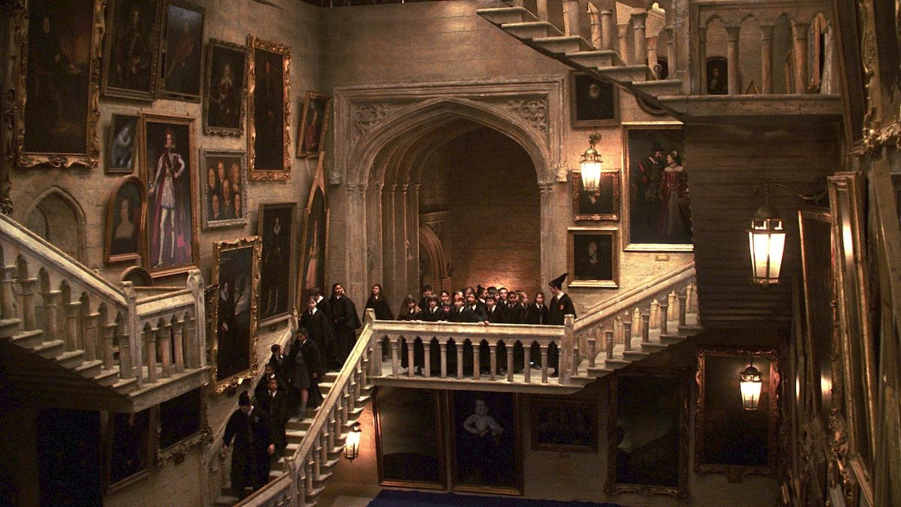
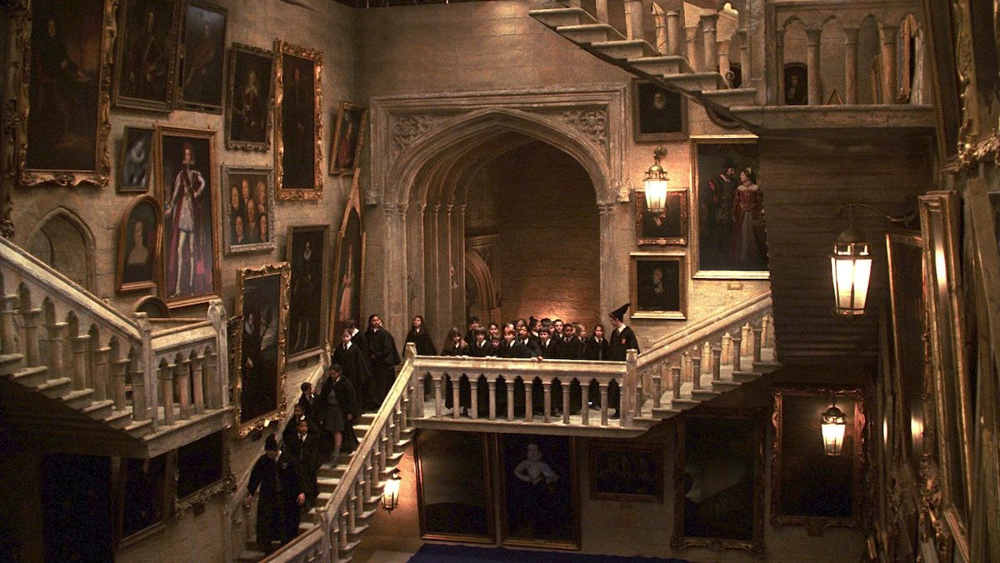

Hogwarts colegio de Magia y Hechicería
Imagenes de nuestras instalaciones

 Nuestra instalacion y el campo
Nuestra instalacion y el campo

 Un aula y una sala comun (Slytherin)
Un aula y una sala comun (Slytherin)
 El gran comedor y a su lado nuetro sombrero seleccionador

Historas de las artes que hay y el recorrido de bienvenida
El gran comedor y a su lado nuetro sombrero seleccionador

Historas de las artes que hay y el recorrido de bienvenida

 Los grandes pasillos y más historia de la escuela
volver a pagina principal..
Los grandes pasillos y más historia de la escuela
volver a pagina principal..